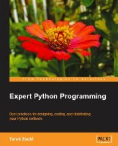

by Tarek Ziadé, 2008. (on Packt)
Publisher Packt were nice enough to send me
a copy of this, so I'm completely biased. Fortunately for everyone, I
really liked it. But I have to say that. But I really did!
. . .
I've been using Python for a couple of years now,
but only on a single project, so while
there are parts of it that I know very well, there is doubtlessly a lack
of cross-fertilisation in the things I am exposed to. So I was looking
forward to this book.
Surprisingly, for such a straightforward-sounding title, it is not at
all what I expected.
What I expected was analyses and illustrations of using Python's more
powerful features: dynamic
designs;
creating classes on the
fly;
functional
programming
styles;
closures and
metaclasses.
Sure enough, there is an early couple of chapters devoted to advanced
language features. First up,
iterators,
and generator
expressions,
and then the .send, .throw and .close
methods
on a
generator,
which induce the yield
statement
to return values or raise exceptions. This is then used to handily
illustrate coroutines as a
method of co-operative
multi-tasking
without the calamity involved with getting all
multi-threaded.
It's exactly the sort of feature I'd pondered writing for myself for a
personal project, oblivious that
the language provides it out of the box.
Other low-level topics covered include the indispensable
itertools module,
interesting uses of function
decorators, best practices
for subclassing built-in types, sensible use of descriptors and
properties,
understanding method resolution
order and using
super, the
often-overlooked
slots, and
finally meta-programming
and
metaclasses.
Interestingly, this list has only one item of overlap with my
expectations. Tarek has done a good job of choosing important but
sometimes overlooked topics, and while, inevitably, I was very familiar
with some of the things he talked about, other sections were complete
revelations for me.
However, this is only chapters 2 and 3! The rest of the book expands in
scope beyond Python the language, to look at the environments and tools
that make up the Python ecosystem. In a way, this sounded less
intriguing to me than the computer-science oriented exploration of
language features that I had expected. But having finished the book, I
now realise that it was exactly what I needed.
The opening chapter goes through installing Python - a topic which I
didn't think needed discussion. But Tarek goes on to cover using MinGW
and MSYS to set up a credible command-line
environment under Windows. I've always used
Cygwin for this in the past, and trying out
MSYS (coupled with the project
Console) is a breath of
fresh air.
This cross-platform development environment is then rounded out a little
by installing and using things like
setuptools, and
some thoughtful notes on integrating Python development into editors
like Vim and
Emacs, or an IDE like
Eclipse.
The rest of the book covers some of the major tools in the Python world.
I've never previously been forced to get to grips with
Distutils. Applying
lessons from the book to a personal project got me completely up to
speed with using Distutils to create packages, making source and binary
distributions, using
eggs, and
distributing dependant packages that together make up an application.
The only thing really missing from this is maybe generating stand-alone
executables using py2exe (for Windows) or
py2app (for Macs), although
this idea is mentioned in passing.
The following chapters give competent overviews of a wide variety of
topics:
8. Version control
systems: centralised,
illustrated by Subversion, or
distributed like
Mercurial.
Continuous integration using Buildbot.
Presumably you will either already know these inside-out or else will
lap them up hungrily.
9. Waterfall,
spiral and
iterative project
life cycles. I'm not sure that waterfall is really used by anyone
except in case studies of 'what not to do', and I'm also not sure how
you could be a developer without being aware of this, but maybe that's
precisely the point: You can't be a developer if you don't do this. This
chapter then covers setting up an instance of
Trac and using it to manage a project's
deliverables, defects, and milestones.
10. Documenting a project using
ReStructuredText and
Sphinx, and including hints on good
technical writing. This caused me to completely revamp the content of my
small personal project's documentation, and as a result it is both much
improved, and shorter to boot. Wins all round.
11. Test-Driven
Development. This
chapter would be a superb overview of the topic for someone who didn't
know about TDD. Although I use TDD extensively at work, I've never used
nose, fearing that
getting to grips with it might be too intrusive or disruptive. In fact,
it is seamless to begin using it in a small way and slowly extend into
its more advanced features as and when you need them.
12. Optimisation : General principles (ie. don't) and profiling
techniques. I had never used the
cProfile module described
here, having just whipped up homespun profilers on-the-spot whenever I
needed them, and it's a valuable addition to my arsenal.
13. Optimisation : Solutions. Big O
notation. Correct use of
different collection types.
Multi-threading,
multi-processing,
caching. Not much that is tremendously new to me here, but it is
obviously a huge topic to cover in a a single chapter, and it covers the
bases competently.
14. Design Patterns, and
how they apply (or don't) to Python. It has been said that design
patterns, as fundamental and necessary as they are to a software
engineer's mindset, are a symptom a language's lack of
[expressivity]{#query .query}. You shouldn't have to write huge gobs of
code
to express simple conceptual relationships. Although Tarek never
explicitly says this, to some extent it is born out by this chapter.
Trivial (and
much-maligned)
ideas like the
Singleton, after a
page or two of alternate implementations, boil down to simply 'use a
module', i.e. zero lines of code. Slightly more complex patterns such as
Visitor, are only a
few lines. It is still useful to discuss and name patterns, but on the
whole reference implementations are so trivial as to be unnecessary,
except perhaps as the most concise and precise method of illustration.
The book overall, then, is a grab-bag of different topics. Each chapter
could clearly be expanded into one or more whole books. As a result, no
part can be covered in very great depth, but Tarek does an admirable job
of getting the reader up to speed enough in each area that they can be
self-sufficient and direct their own learning from that point.
As as result of the broad scope of the book it serves as a brilliant
annotated laundry list of 'things the Python developer ought to know'.
While there will doubtlessly be some sections that you are already
deeply familiar with, if you have any interest in discovering your own
deficiencies as a Python programmer, I can highly recommend it.
Rating: 7.5/10 - Made concrete improvements to the way I work every day.